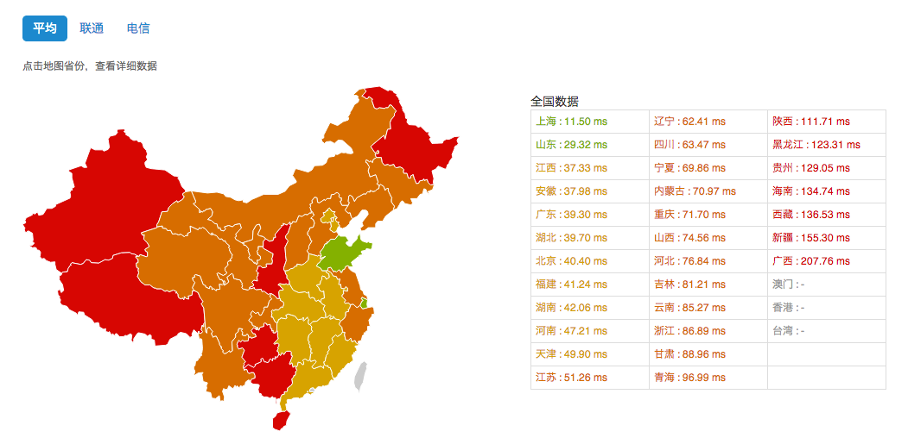
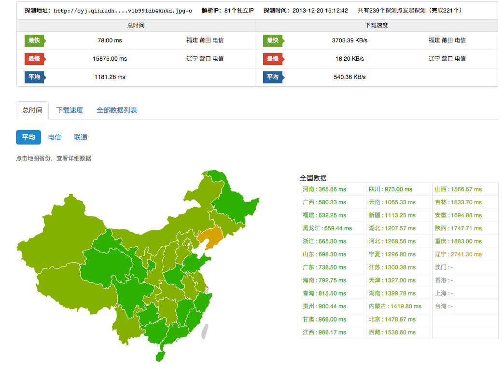
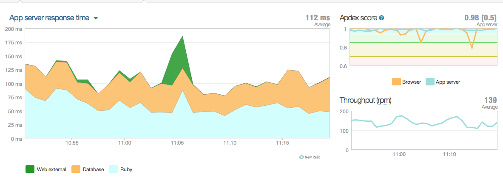
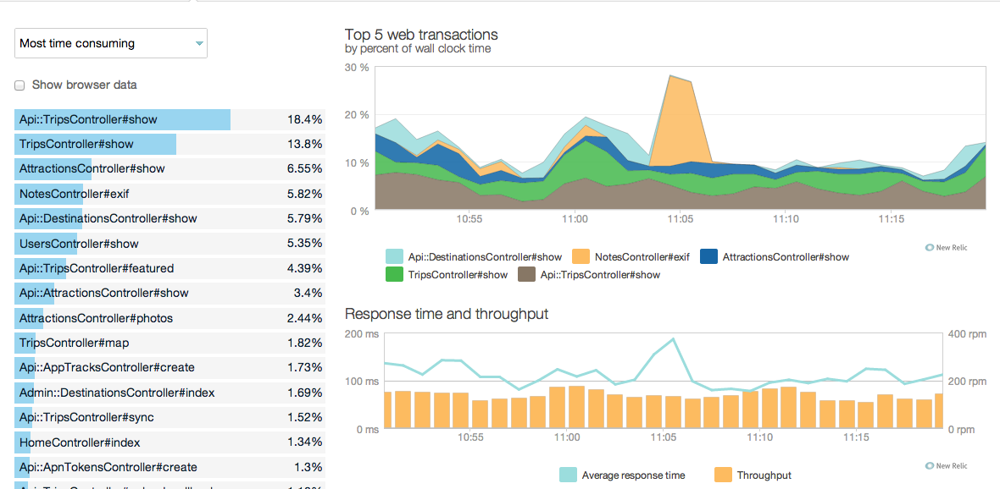
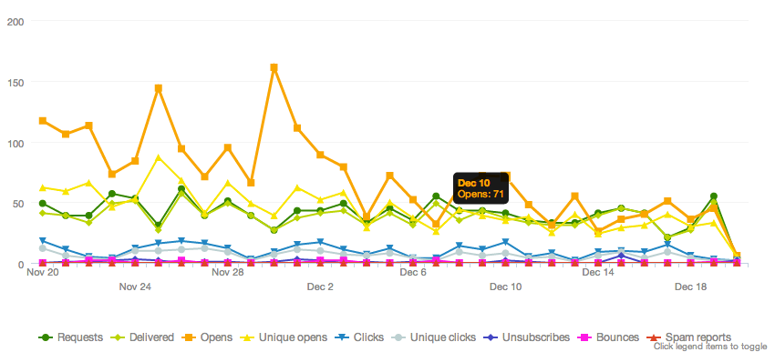

蝉游记
为什么只有一个后台程序员
By @quakewang
关于蝉游记
以下是广告时间
为什么
因为
- 我们的产品汪和设计狮都会写代码
以下才是干货时间
因为
- 高生产力的语言和框架
- 云平台
- 第3方服务
程序员眼中的程序员

Ruby
1.upto(3) {|i| puts i}
1
2
3
Ruby
"The quick brown fox jumps over the lazy dog".downcase.split("").uniq.sort.join
" abcdefghijklmnopqrstuvwxyz"
Ruby
class Time
def yesterday
self - 86400
end
end
today = Time.now
yesterday = today.yesterday
Ruby
COLORS = { black: "000",
red: "f00",
green: "0f0",
yellow: "ff0",
blue: "00f"
}
class String
COLORS.each do |color,code|
define_method "in_#{color}" do
"<span style='color: ##{code}'>#{self}</span>"
end
end
end
"Hello, World!".in_blue
=> "<span style='color: #00f'>Hello, World!</span>"
Ruby on Rails
ActiveRecord
User.create(name: "David", occupation: "Code Artist")
Blog.where(created_at: 1.week.ago.beginning_of_week..1.week.ago.end_of_week).order(view_counts: :desc).first.subject
Ruby on Rails
Resource Routing
resources :trips
namespace :api do
resources :trips
end
Ruby on Rails
Web开发最佳实践
- Database Migration
- Asset Pipeline
- Cache
- Turbolinks
结论
- 选择更有生产力的语言
- 选择最佳实践的框架
- 1个程序员可以完成N个程序员的活
- @老板，发N倍工资吗
运维人员去哪了？
云主机
为我们这种创业团队解决如下问题
- 人员问题：基础架构技术人员、运维管理人员。
- 时间成本：机房调研，硬件采购周期，基础架构的搭建与运维管理。
- 硬件成本：服务器，机房托管费用。
如何选择云主机提供商
- 类似案例
- 搜索： 吐槽 XXX
- 试用，试用，再试用
- 选最贵的AWS
- 我们选择了ucloud.cn (请将广告费汇入我的账户)
秘密武器
http://alibench.com/ 云存储
为我们这种UGC项目解决如下问题
- 架构问题：安全存储，扩容
- 图片问题：高清大图和下载速度的矛盾
- 成本问题：存储硬件和带宽成本
如何选择云存储提供商
- 功能特性
- 类似案例
- 搜索： 吐槽 XXX
- 我们选择了qiniu.com (请将广告费汇入我的账户)
再次用上秘密武器
http://alibench.com/ 第3方服务之监控
New Relic 不仅仅是监控
第3方服务之邮件发送
- 配置问题：配置邮件服务是Linux世界里面最难的事情
- 到达率问题：DKIM, Domain Key, White List 等等
- 邮件效果追踪：打开，点击，转化率
- Send Grid
- 
结论
- 选择靠谱的云平台
- 选择便捷的第3方服务
- 开发程序员也可以完成运维的活
- @老板，给我再多发一份运维工程师的工资吗
FAQ
最后还要广告：蝉游记